Posters & Print
Posters, currency design, album art, illustration, and apparel graphics.
Architecture in Madison
An illustrated map of notable architecture across Madison, WI, rendered in a blueprint-style aesthetic. The piece functions as both an informational guide and a standalone illustration, balancing geographic accuracy with visual rhythm.
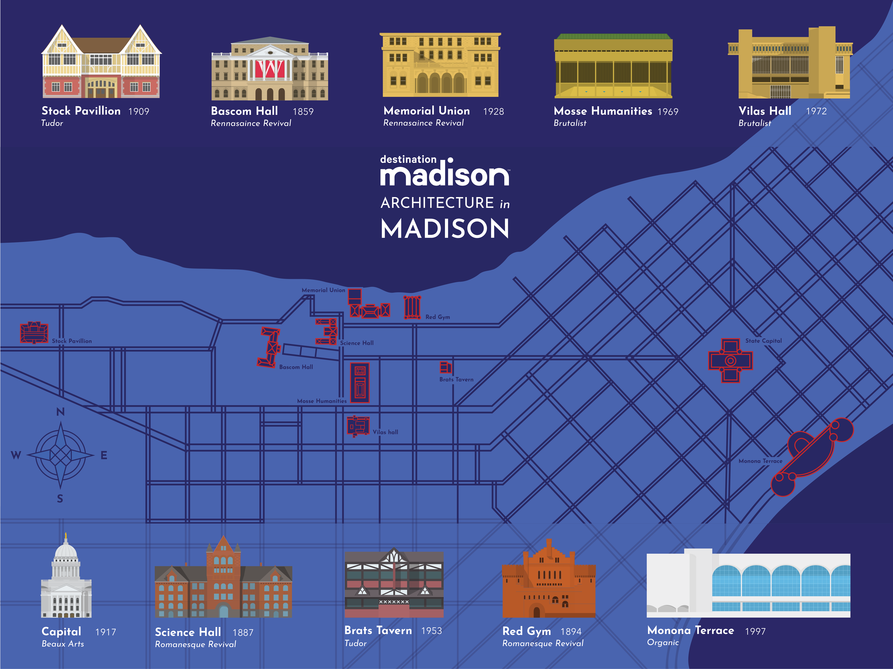
The New Yorker Slideshow
A 10-page editorial slideshow inspired by The New Yorker's visual language, covering boxing, mafia, and war cinema. Each section features custom illustrated covers and typographic treatments in The New Yorker's signature style.
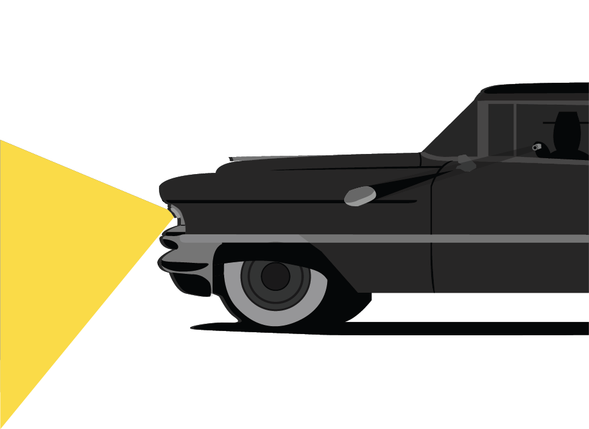

Badgers in the Olympics
A data visualization poster documenting every UW-Madison Olympic medalist. The design organizes athletes by sport, year, and medal type into a single large-format print that works as both infographic and commemorative piece.
Italian Lira Redesign
A speculative redesign of three denominations of the Italian Lira, drawing from traditional Italian tile patterns for the security backgrounds and featuring cultural landmarks on each bill. Every denomination has a distinct color story while sharing a unified design system across the series.
Individual Denominations
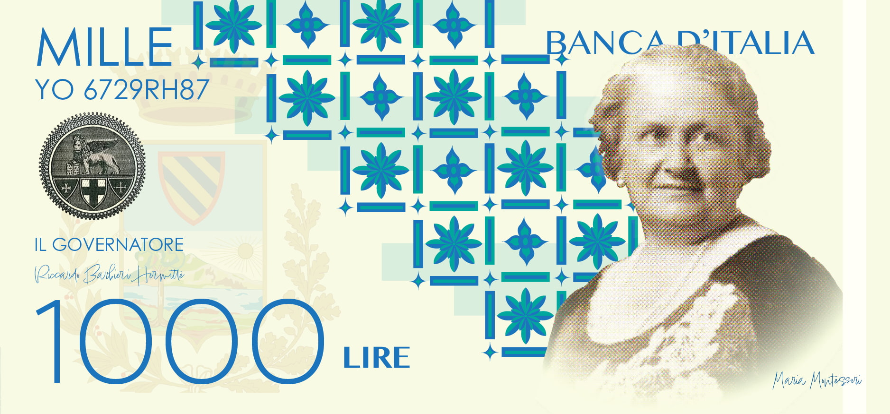

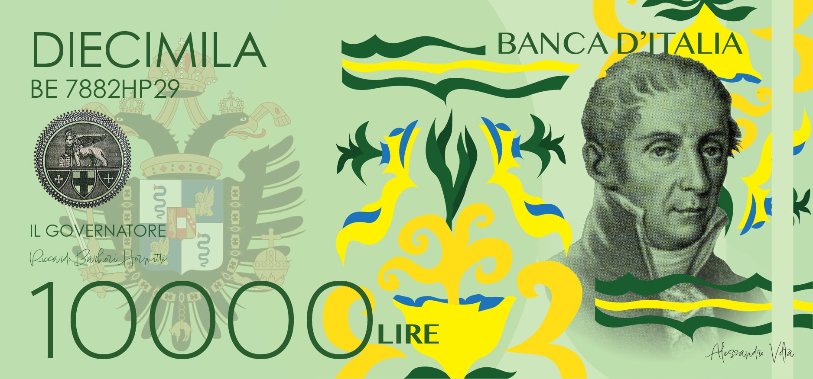
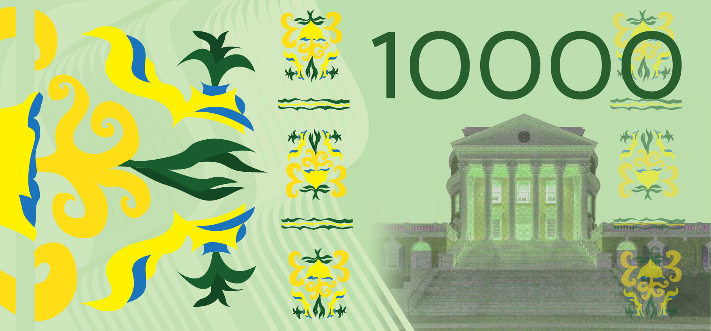


Anima Latina — Album Cover Redesign
A retro-inspired redesign of Lucio Battisti's iconic "Anima Latina" album. The cover and sleeve use original photography shot in Italy, blending contemporary composition with vintage Italian graphic sensibility. One of the few projects in this portfolio driven by photography rather than illustration.


RiverBank
Brand identity and illustration work for RiverBank, an outdoor lifestyle clothing brand inspired by the natural world. The project includes multiple logo variations, emblem designs, and a series of horizontal landscape illustrations depicting locations across the American West — from Grand Teton to the Grand Canyon.
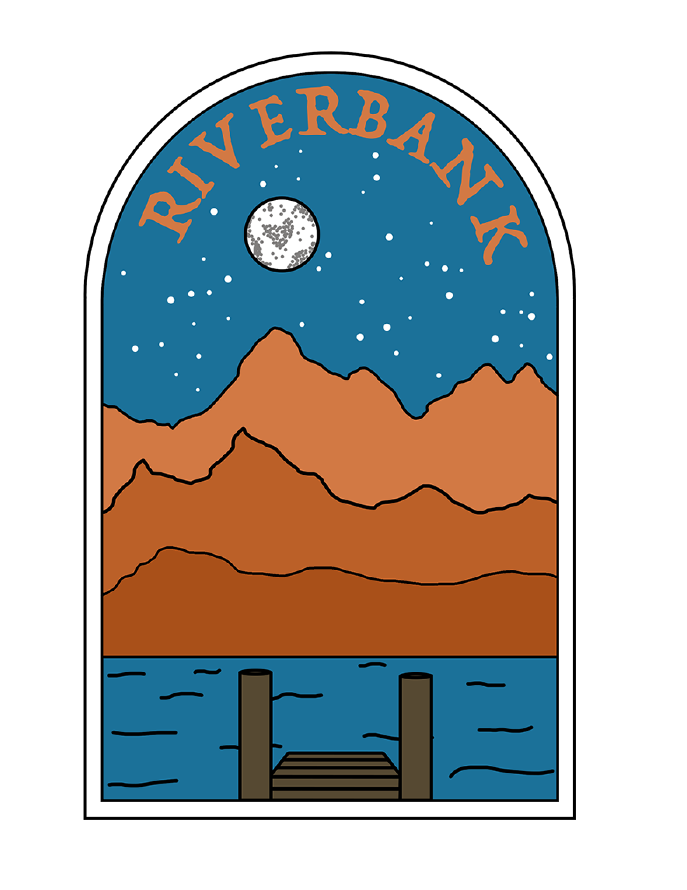
Logo & Emblem System


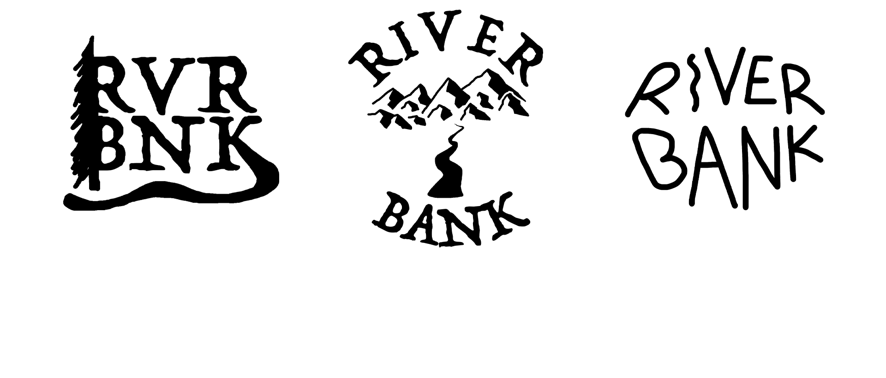
College Town Tees
A collegiate clothing line featuring embroidered front logos with cursive city typography and detailed back graphics of iconic football stadiums. Designs span multiple college towns with alternate colorways including cow-print and checkerboard pattern variants.
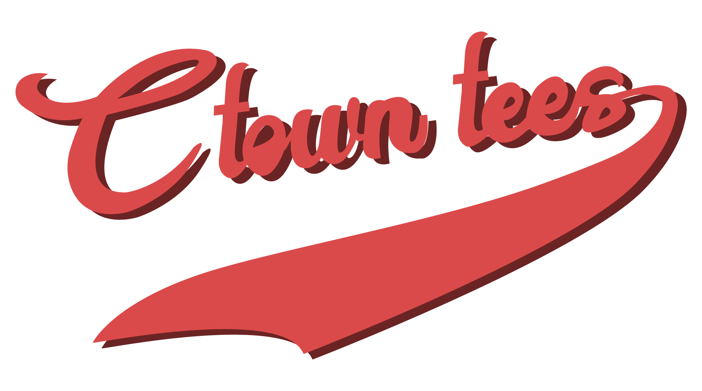
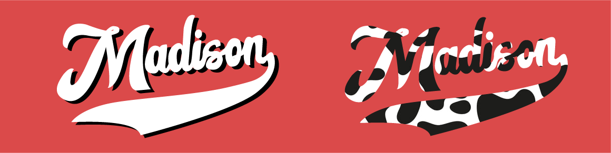

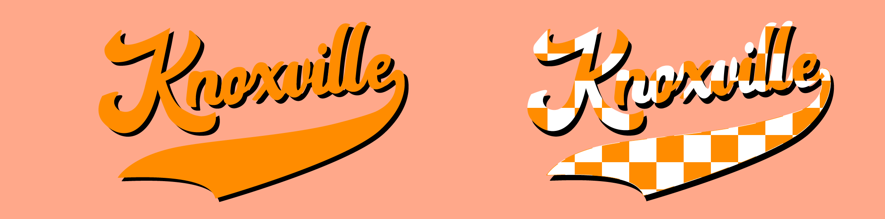

2025 Wrapped
A Spotify Wrapped-inspired infographic summarizing a year of design, travel, and creative output — from typefaces used and miles walked to espresso consumed and hours on Illustrator.
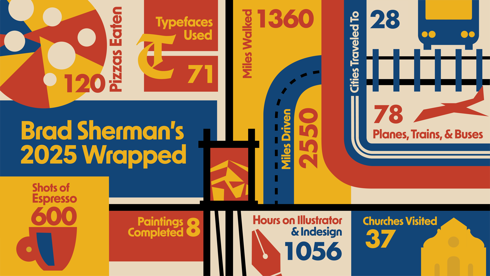
Selected Posters
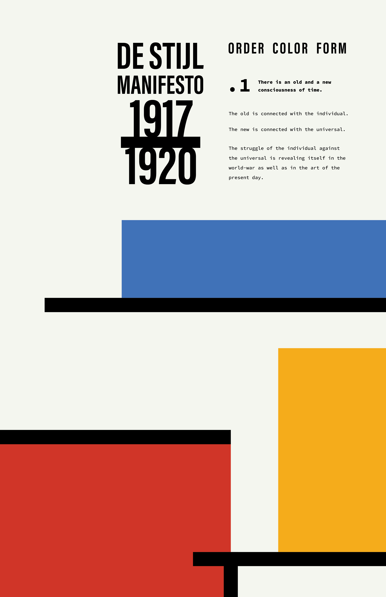
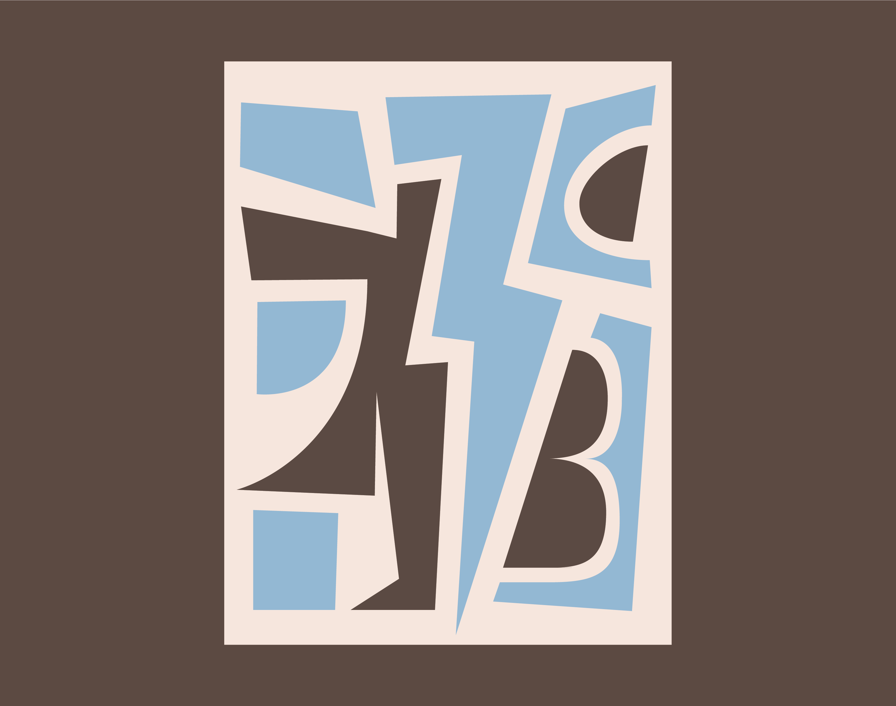